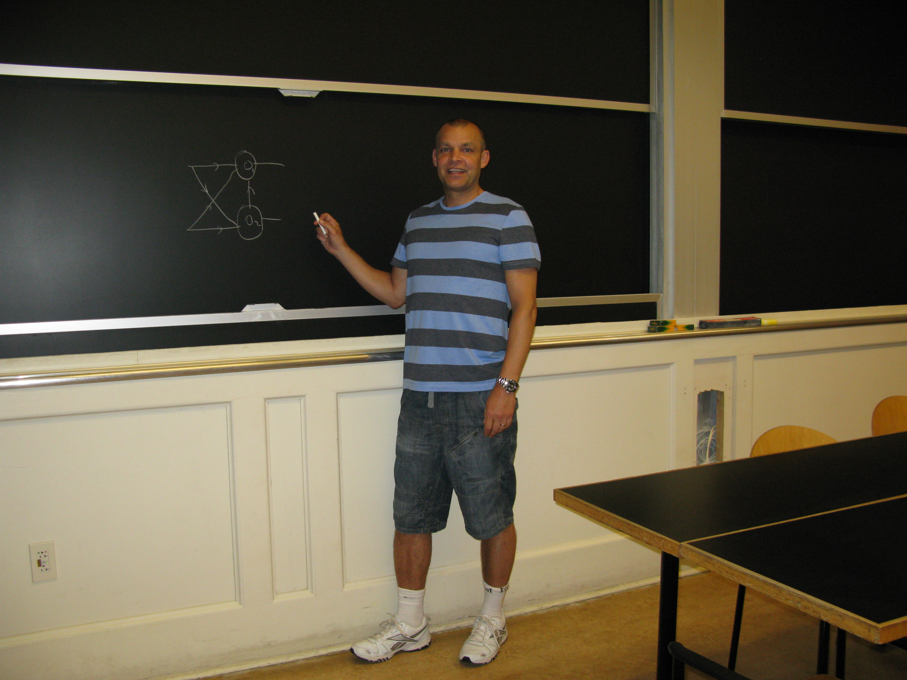

Personal Homepage: Dr Stephen Lynch NTF FIMA SFHEA
|
Chapter Downloads: 1st Edition (2004): 27,000 |
Chapter Downloads: Jupyter Notebook |
Chapter Downloads:
1st Edition (2000): 10,000 |
Chapter Downloads: 1st Edition (2007): 73,000 |


|
|
National Teaching Fellow |
|
 |
Contacting Me
Manchester Metropolitan University Chester Street Manchester M1 5GD, UK Office / Post: E116b |